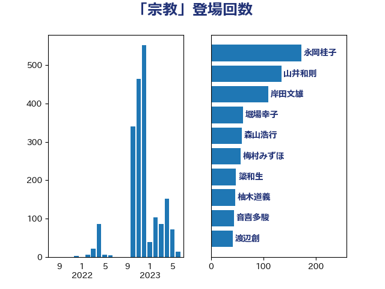

単語「宗教」

| 永岡桂子 | 自由民主党 | 172 回 |
| 山井和則 | 立憲民主党 | 134 回 |
| 岸田文雄 | 自由民主党 | 109 回 |
| 堀場幸子 | 日本維新の会 | 61 回 |
| 森山浩行 | 立憲民主党 | 59 回 |
| 梅村みずほ | 日本維新の会 | 57 回 |
| 簗和生 | 自由民主党 | 48 回 |
| 柚木道義 | 立憲民主党 | 46 回 |
| 音喜多駿 | 日本維新の会 | 44 回 |
| 渡辺創 | 立憲民主党 | 42 回 |
| 早稲田ゆき | 立憲民主党 | 42 回 |
| 宮本岳志 | 日本共産党 | 36 回 |
| 加藤勝信 | 自由民主党 | 35 回 |
| 石垣のりこ | 立憲民主党 | 32 回 |
| 古川元久 | 国民民主党 | 29 回 |
| 田村まみ | 国民民主党 | 26 回 |
| 金村龍那 | 日本維新の会 | 25 回 |
| 河野太郎 | 自由民主党 | 20 回 |
| 櫻井周 | 立憲民主党 | 20 回 |
| 柳ヶ瀬裕文 | 日本維新の会 | 20 回 |
| 仁比聡平 | 日本共産党 | 20 回 |
| 小西洋之 | 立憲民主党 | 18 回 |
| 西村智奈美 | 立憲民主党 | 16 回 |
| 荒井優 | 立憲民主党 | 16 回 |
| 矢倉克夫 | 公明党 | 16 回 |
| 宮崎政久 | 自由民主党 | 16 回 |
| 城井崇 | 立憲民主党 | 15 回 |
| 青柳仁士 | 日本維新の会 | 14 回 |
| 末松信介 | 自由民主党 | 13 回 |
| 山田太郎 | 自由民主党 | 12 回 |
| 足立康史 | 日本維新の会 | 11 回 |
| 熊谷裕人 | 立憲民主党 | 11 回 |
| 梅村聡 | 日本維新の会 | 11 回 |
| 田中健 | 国民民主党 | 10 回 |
| 浅田均 | 日本維新の会 | 10 回 |
| 宮本徹 | 日本共産党 | 10 回 |
| 國重徹 | 公明党 | 10 回 |
| 齋藤健 | 自由民主党 | 9 回 |
| 石川大我 | 立憲民主党 | 9 回 |
| 山添拓 | 日本共産党 | 9 回 |
| 緒方林太郎 | 無所属 | 8 回 |
| 岸真紀子 | 立憲民主党 | 7 回 |
| 伊藤孝恵 | 国民民主党 | 7 回 |
| 高木陽介 | 公明党 | 6 回 |
| 西岡秀子 | 国民民主党 | 6 回 |
| 葉梨康弘 | 自由民主党 | 6 回 |
| 米山隆一 | 立憲民主党 | 6 回 |
| 大西健介 | 立憲民主党 | 6 回 |
| 古屋範子 | 公明党 | 6 回 |
| 井野俊郎 | 自由民主党 | 6 回 |
| 馬場伸幸 | 日本維新の会 | 5 回 |
| 長妻昭 | 立憲民主党 | 5 回 |
| 菊田真紀子 | 立憲民主党 | 5 回 |
| 福島みずほ | 社会民主党 | 5 回 |
| 田島麻衣子 | 立憲民主党 | 5 回 |
| 沢田良 | 日本維新の会 | 5 回 |
| 林芳正 | 自由民主党 | 5 回 |
| 新垣邦男 | 立憲民主党 | 5 回 |
| 宮崎雅夫 | 自由民主党 | 5 回 |
| 大串正樹 | 自由民主党 | 5 回 |
| 和田義明 | 自由民主党 | 5 回 |
| 吉田はるみ | 立憲民主党 | 5 回 |
| 金子俊平 | 自由民主党 | 4 回 |
| 逢坂誠二 | 立憲民主党 | 4 回 |
| 辻元清美 | 立憲民主党 | 4 回 |
| 森本真治 | 立憲民主党 | 4 回 |
| 柿沢未途 | 無所属 | 4 回 |
| 山田賢司 | 自由民主党 | 4 回 |
| 安江伸夫 | 公明党 | 4 回 |
| 大石あきこ | れいわ新選組 | 4 回 |
| 高木かおり | 日本維新の会 | 3 回 |
| 阿部弘樹 | 日本維新の会 | 3 回 |
| 鈴木義弘 | 国民民主党 | 3 回 |
| 谷田川元 | 立憲民主党 | 3 回 |
| 羽田次郎 | 立憲民主党 | 3 回 |
| 篠原孝 | 立憲民主党 | 3 回 |
| 石橋通宏 | 立憲民主党 | 3 回 |
| 田村智子 | 日本共産党 | 3 回 |
| 漆間譲司 | 日本維新の会 | 3 回 |
| 浜田聡 | NHK党 | 3 回 |
| 櫛渕万里 | れいわ新選組 | 3 回 |
| 松原仁 | 立憲民主党 | 3 回 |
| 本田顕子 | 自由民主党 | 3 回 |
| 小池晃 | 日本共産党 | 3 回 |
| 北神圭朗 | 無所属 | 3 回 |
| 井上貴博 | 自由民主党 | 3 回 |
| 井上哲士 | 日本共産党 | 3 回 |
| 串田誠一 | 日本維新の会 | 3 回 |
| 中川正春 | 立憲民主党 | 3 回 |
| 下条みつ | 立憲民主党 | 3 回 |
| 馬淵澄夫 | 立憲民主党 | 2 回 |
| 長友慎治 | 国民民主党 | 2 回 |
| 鎌田さゆり | 立憲民主党 | 2 回 |
| 鈴木貴子 | 自由民主党 | 2 回 |
| 赤池誠章 | 自由民主党 | 2 回 |
| 萩生田光一 | 自由民主党 | 2 回 |
| 茂木敏充 | 自由民主党 | 2 回 |
| 若宮健嗣 | 自由民主党 | 2 回 |
| 芳賀道也 | 国民民主党 | 2 回 |
| 田名部匡代 | 立憲民主党 | 2 回 |
| 牧義夫 | 立憲民主党 | 2 回 |
| 泉健太 | 立憲民主党 | 2 回 |
| 池畑浩太朗 | 日本維新の会 | 2 回 |
| 本村伸子 | 日本共産党 | 2 回 |
| 斎藤アレックス | 国民民主党 | 2 回 |
| 打越さく良 | 立憲民主党 | 2 回 |
| 川田龍平 | 立憲民主党 | 2 回 |
| 山際大志郎 | 自由民主党 | 2 回 |
| 山本太郎 | れいわ新選組 | 2 回 |
| 小川淳也 | 立憲民主党 | 2 回 |
| 小寺裕雄 | 自由民主党 | 2 回 |
| 大口善徳 | 公明党 | 2 回 |
| 古川禎久 | 自由民主党 | 2 回 |
| 伊佐進一 | 公明党 | 2 回 |
| 中谷一馬 | 立憲民主党 | 2 回 |
| 中村裕之 | 自由民主党 | 2 回 |
| 世耕弘成 | 自由民主党 | 2 回 |
| こやり隆史 | 自由民主党 | 2 回 |
| 門山宏哲 | 自由民主党 | 1 回 |
| 鈴木敦 | 国民民主党 | 1 回 |
| 鈴木庸介 | 立憲民主党 | 1 回 |
| 鈴木宗男 | 日本維新の会 | 1 回 |
| 鈴木俊一 | 自由民主党 | 1 回 |
| 金子道仁 | 日本維新の会 | 1 回 |
| 野田佳彦 | 立憲民主党 | 1 回 |
| 赤嶺政賢 | 日本共産党 | 1 回 |
| 西村康稔 | 自由民主党 | 1 回 |
| 紙智子 | 日本共産党 | 1 回 |
| 穀田恵二 | 日本共産党 | 1 回 |
| 福重隆浩 | 公明党 | 1 回 |
| 福島伸享 | 無所属 | 1 回 |
| 石橋林太郎 | 自由民主党 | 1 回 |
| 石川香織 | 立憲民主党 | 1 回 |
| 石川昭政 | 自由民主党 | 1 回 |
| 石井苗子 | 日本維新の会 | 1 回 |
| 田野瀬太道 | 無所属 | 1 回 |
| 牧原秀樹 | 自由民主党 | 1 回 |
| 清水真人 | 自由民主党 | 1 回 |
| 水岡俊一 | 立憲民主党 | 1 回 |
| 森田俊和 | 立憲民主党 | 1 回 |
| 松野博一 | 自由民主党 | 1 回 |
| 松本剛明 | 自由民主党 | 1 回 |
| 本庄知史 | 立憲民主党 | 1 回 |
| 日下正喜 | 公明党 | 1 回 |
| 志位和夫 | 日本共産党 | 1 回 |
| 徳永久志 | 無所属 | 1 回 |
| 徳永エリ | 立憲民主党 | 1 回 |
| 後藤祐一 | 立憲民主党 | 1 回 |
| 川合孝典 | 国民民主党 | 1 回 |
| 山口晋 | 自由民主党 | 1 回 |
| 小宮山泰子 | 立憲民主党 | 1 回 |
| 小倉將信 | 自由民主党 | 1 回 |
| 嘉田由紀子 | 無所属 | 1 回 |
| 吉良州司 | 無所属 | 1 回 |
| 吉良よし子 | 日本共産党 | 1 回 |
| 吉田統彦 | 立憲民主党 | 1 回 |
| 吉川元 | 立憲民主党 | 1 回 |
| 勝目康 | 自由民主党 | 1 回 |
| 佐々木さやか | 公明党 | 1 回 |
| 井原巧 | 自由民主党 | 1 回 |
| 中田宏 | 自由民主党 | 1 回 |
| 中条きよし | 日本維新の会 | 1 回 |
| 下村博文 | 自由民主党 | 1 回 |
| おおつき紅葉 | 立憲民主党 | 1 回 |